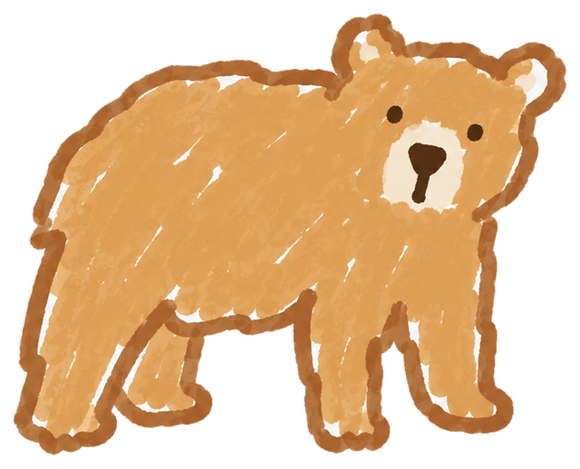
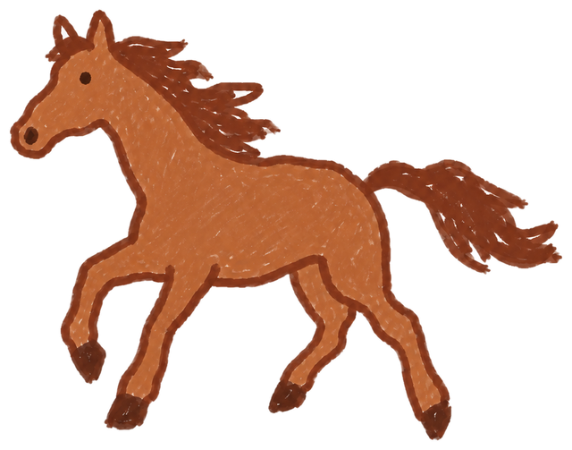
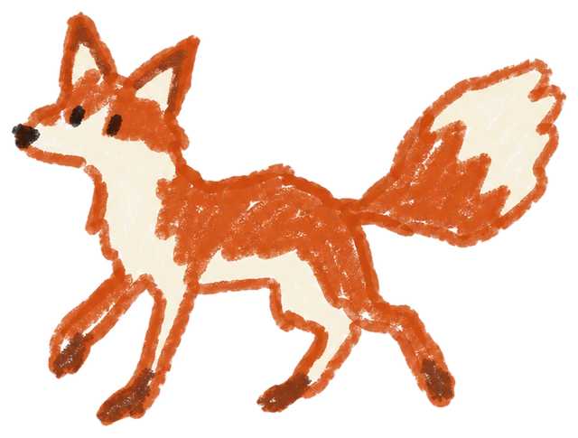
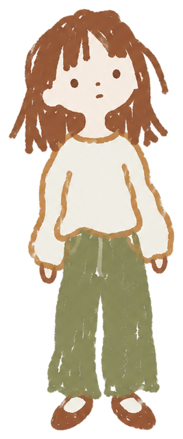
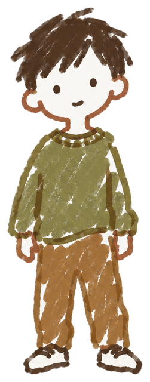
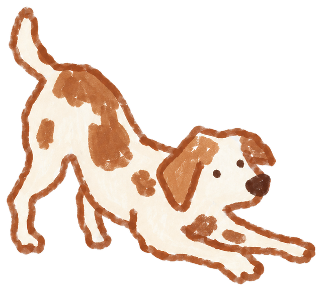
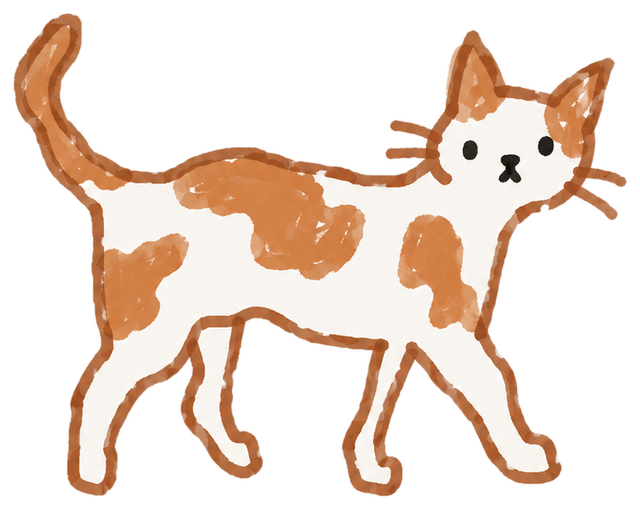
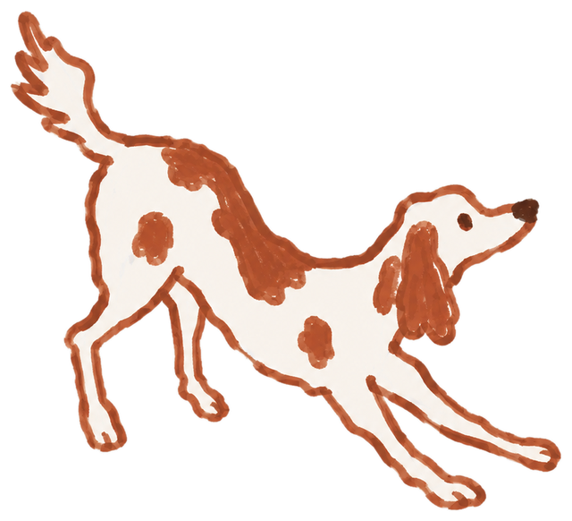
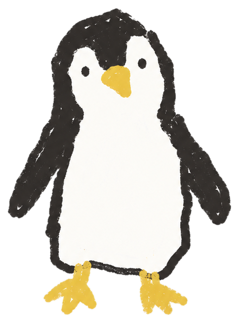

Knead the one you need.
Pick a little friend, shape its personality with a few sliders, and let it live on your desktop. It runs on the AI plan you already pay for, so there's nothing extra to buy.
Free to play with. You only sign up when you download.
Knead it, and watch it change.
Start from a type, then drag the sliders. Push an axis past the middle and it becomes a different type, so a different friend. The dials change how it moves and the calls it makes.
Start from a type
{{pickHint}}
Shape it
Why it reacted this way
More than a voice. A point of view.

Reads your calendar
An exam, a date, a two-hour coding block. It knows what's coming, and its mood shifts with your day.

Makes a real call
A grinder tells you to finish tonight. A steady one sends you to bed. Different personalities, different decisions.

Notices how you type
Rushed, jittery, stalled. It reads typing rhythm only. What you type is never read or stored.


Can even be you
In Mirror mode it becomes your digital self, showing the state you're in instead of telling you what to do.
How it works

Knead it on the web
Pick one of 16 types and drag the sliders. Push an axis past the middle and your friend turns into someone else. No account, no prompt writing.

Bring it home
The only step that asks you to sign up. Your companion moves onto your desktop and connects to the AI plan you already pay for. Nothing extra to pay us.

Keep shaping it
The same sliders live in the desktop app. Nudge it as you get to know each other: more blunt during finals, more chill on weekends.
Tell us what you think.
We're building this with the first people who try it. What felt off, which friend you'd want next, and whether you'd really keep it on your desktop all help.

{{name}} says thanks too. We read every note.